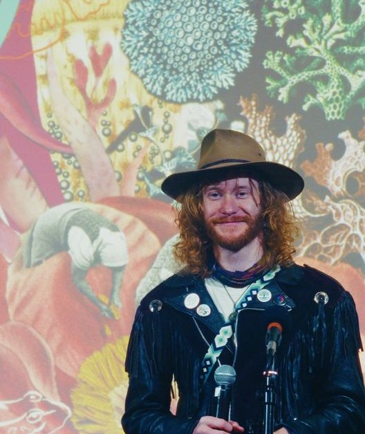
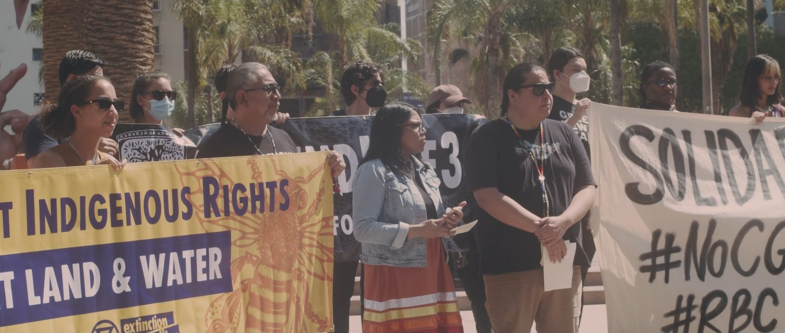
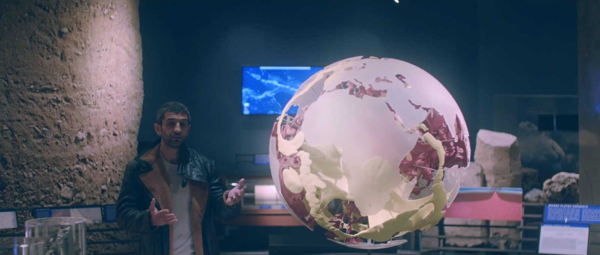
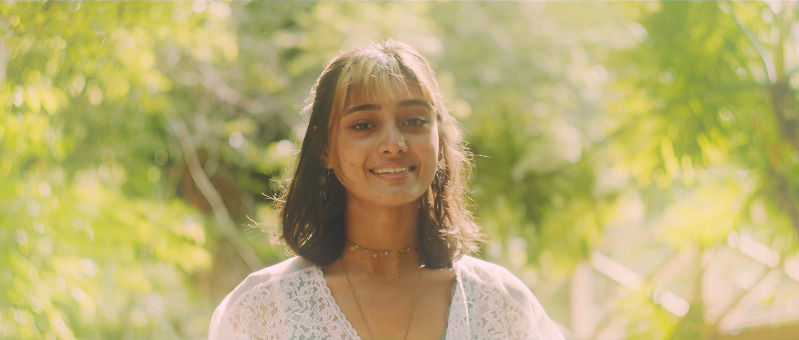

The Plot
The world runs on stories nobody chose. We're building the way to write new ones together.
1 · Origin
One story changes, and a whole life follows.
What it is
We all know you need a story to know where you're going, to tell people what you're doing, to make a sale, to raise money, to build something that didn't exist before. What's not obvious is that story is the operating system of human identity, of culture, and of the very economy we live in.

I learned that the hard way. A decade ago I came to the end of my old story. I ended the character I'd been living and woke up to the realization that this was all a narrative, and I held the pen. So I used the power of story itself to turn my life into an adventure. Story was my only currency, and it was enough. I traveled across the planet chronicling solutions and deprogramming the economic myths that keep us stuck in a world we don't want, and I found answers to the world's greatest problems everywhere. Brilliant visionaries on every continent struggled to communicate the value and meaning of what they were doing, so the answers to humanity's biggest questions stayed invisible, illegible and impossible, even to the people building them. Then I hit the end of that story too. Nobody was coming to save us. Nobody was going to fund what I'd found.
So I broke down and said fuck it. Someone has to build the bridge. Someone has to fund our evolution. From a trailer in the mountains of California I started a company, walking people through the same mythic journey I'd walked, the Metamyth, and I rewrote my entire existence with that pen.
Reality is story-shaped. The same structures that make a great book or an addictive series run human consciousness itself, and the brands and economies that create our world. The Metamyth is the ancient pattern that gives those stories meaning. We take founders on the journey of a lifetime to rewrite their story into an epic quest and a magnetic brand narrative that attracts people, resources and opportunities, a story that becomes more real the more you tell it.
That's why storytelling is fast becoming one of the most valuable skills in any company. Story is the coherence that holds strategy, product, brand, marketing and sales together, the thing that makes all the parts fit. It's how we create the future: tell the story of what we want to build, and watch the world rearrange itself into that shape.
We blow people's minds, fast and predictably, in a system that gets more dangerous by the day. In as little as ninety minutes we've changed the lives of some of the most brilliant humans on the planet, and their results will make your head spin. They've raised funds, written books and pulled millions of views, all by realizing their story was already meaningful. They just weren't the ones authoring it. It's a guided journey, held in community and powered by cutting-edge tech, that turns a well-told story, fully lived, into everything your mission needs: the strategy, the brand, the offer, the tribe, the future.
And I've lived every word of it. I was the exact person I'm here to help: a frustrated visionary, pissed off at a broken system, stuck in scarcity, unable to move the people around me, dreaming of a better world with no power to make it real. In one story, in one year, I transformed my own reality into something I couldn't have imagined: a vibrant, unbelievable community, a company that did $80K in sales, more than forty mind-blowing transformations, an incredible product, a meta-solution to the biggest systemic issues in the world, and a whole portfolio of incredible projects weaving together into a movement to rewrite the story itself.
And that's just the beginning of our story, because the whole point of Metamyth is that every personal story carries the soul of the collective one. We're here to change the world one story at a time, rewriting the stories that create our world together and remembering our true power as the storytelling species. If all the problems in the world are stories, and come on, we know they are, then look around. Politics is theater. Cult brands hypnotize the masses. And money, pure fiction, proves that a story based on nothing but belief can rewrite reality itself. So what could a true story do? What could yours do?
2 · Calling
The world's problems are stories, and the old one is ending.
Our quest
You already know the story we don't want. A casino economy betting against life, tech lords building escape pods instead of fixing the planet we're on, and a meaning crisis that has almost everyone wondering if their life matters. The story that ran the world for five hundred years is ending, and you can feel it in your body.
When everything fake becomes infinite, everything real becomes priceless. Think about how many people don't identify with the story they're living. Think about how many are about to lose their jobs and their purpose to AI, hundreds of millions by most estimates. Every one of them is going to go looking for a story, and the demand for meaning is endless. Personal development is a market headed for $67B by 2030, and impact capital is piling up with no system to deploy it. The meaning crisis is becoming the meaning economy, the greatest economic transformation in the history of humankind, and whoever writes what comes next gets to author the future itself: how we price value, how business works, what wealth even means.
The realest solutions on earth already exist, and most of them are dying invisible. That's what broke my heart. I've filmed them on five continents. The people carrying them are broke and burned out, because the story isn't storying: nobody can see what they're holding, sometimes not even them. Meanwhile $124 trillion is about to change hands, to a generation that wants its money to mean something, and the best the old system can offer them is seven tech companies and private equity eating the planet.
That looks like a tragedy, and it's the investment opportunity of a lifetime. All that value is locked on the other side of the old story, out of sight because it can't be told in the old story's terms, and whoever makes it legible gets to stand right where the money is going.
Right now we're focused on the visionaries, the regenerators, the changemakers. They're our bet because they're the ones holding the solutions. Help them, build the company on that, and we earn the right to scale to everyone else looking for meaning. Making purpose pay is the missing piece in the whole regenerative movement, and that's our quest: a decade-long journey to build the bridge between the solutions the world needs and the people and capital looking for them.
Our people
We know our customer, because our customer and the hero of our journey are the same person. They're purpose-driven visionaries, tired of the old system because they're here to build the new one. They're running companies, building organizations, launching startups. They're done protesting, done complaining, done spiritually bypassing. They know it's time for change and that they're the ones to make it. What most of them can't do yet is tell the story of what they're building, and that's where we come in.

And around us is the regenerative movement, an interconnected, growing community conference-hopping, going on quests with indigenous wizards and building the future together. A rag-tag, brilliant group of misfit genius polymaths, joyfully aware of how broken the system is and building the new one. We're all collaborating toward this shared future, and yet few have cracked the economics of their own business or their funding, and nobody has an offer. Till now. This network is our secret weapon, our talent pool, and the venture community we're weaving into the most valuable IP on earth: people from around the world with real answers to the greatest crises of our time.
3 · Quest
Business is a story, and the right one changes everything fast.
Making purpose pay
We all have a story, and it's worth far more than any of us realizes. You could hold the cure for cancer, and if you can't tell it in a way that makes people care, nothing happens. Nothing changes. The people who've taken over this world don't have your truth, your wisdom or your experience. They have the story. The whole thing runs on story.
Metamyth is the transformation system that gives you yours. It finds the story inside a person, a project or a movement, turns the wound into the gift and the crisis into the calling, and forges it into everything the mission needs: the strategy, the brand, the offer, the tribe, the future. Nothing systematically increases the value of a person or an organization more than its story, and yet the greatest stories in the world are unsung.
People who've crossed call it mind-blowing, like dying and being reborn, coming out the other side with a new nervous system, in a new reality.
There are three ways in. Clients pay high-ticket prices. Contributors trade their skills and time. And when we believe in a project's story, we invest in it and share in its results.
Take the journey
- The Kinship Quest · If you're a visionary carrying something the world needs. Twenty-one people on the full journey together, three seasons a year, and every person in our first cohort asked to keep going. → $3,500 a seat · $6,500 with one-to-one guidance
- The Adventure · If your venture is already moving and you need it sharp now. The journey one-to-one over a few weeks. Our first client, a banker, called it the best money he'd ever spent. We run it for brands and teams too. → $7,000–15,000
We make deals with people
- Partner projects · If your project is changing the world and the money isn't there yet. When we believe in a project's story, we invest in it: it comes onto the journey, and we share in its fundraising and launches. → We invest in you
- Contributors · If you have gifts to give. Your skills, time and heart buy your seat. Contributors build with us and rise through levels as they go. Most of our first cohort came in this way. → Your gifts
Graduates stay on in Kinship, our community, and every person who crosses brings someone back.
The story keeps storying
What happens when someone rewrites their life story? In our experience, everything changes, and it changes fast.
- J Friday was my first coaching client. She was homeless, carrying a plan for community wealth nobody would hear. She went viral, became one of the top voices on Substack, landed in the national press, and the Scottish government changed its policy.
- Steve Keen predicted the 2008 crash and spent a decade being ignored. After three sessions he raised $18,000 in a single webinar. Within months he was pulling a million views a week, sitting on the biggest podcasts in the world, and talking with political parties across the UK.
- Michael Haupt studied civilizational collapse for decades with no way to make it land. After one ninety-minute session he wrote a 30,000-word book in 28 days, launched a new brand, and watched his videos go from a hundred views to seven thousand.
- Gareth Thompson, a doctor, spent five years searching for the link between personal and planetary health. We found it together in three hours.
Community
Community is the atomic unit of transformation. How crazy that the whole world economy is organized around individuals? Personal transformation is a scam in isolation, because you're fighting the way your brain is wired as a social species. We always and only transform in community. And yet we're living in the stone age of coaching, one expert talking at one client in one room.
So the group is the technology. The Kinship Quest runs many-to-many: clients guide each other, they guide us, and the breakthrough often comes from someone in the room who walked the path a few weeks earlier. By the end, the founders in that room were backing each other's work. I'm sitting there watching it like, holy shit, we built a thing that teaches itself.
The magic of this community is mind-blowing. Everyone transforming on schedule. Crossing their thresholds in 30-minute sessions. Nobody ever wants it to end, and 100% of our first cohort asked to continue. It's transformed us as much if not more than anyone. It's pure magic. As Dr. Geordan Shannon put it: "How do you describe a process that reorganizes you on a cellular level? ... You trip the circuit on deep connection and ruined all my other in-person communities."
Scaling THAT is going to be the hardest part.
4 · Vision
Technology is becoming a story, and story is how we coordinate.
Technology
Story is the original technology. It's how humans got from scattered tribes around fires to civilizations, and every system running the world today is a story system that's evolved right up to the point of blowing itself up. The market coordinates us through price, so we fight over fake value. The feed coordinates us through attention, so our stories become someone else's product. Now AI shows up, the first technology you program with story, and the context that shapes our lives turns out to be the key to using it with purpose. Turning data into meaning is what stories do. We're all getting tired of tech that harvests us and drowns us in slop. So we're building the kind that makes you more human.

Right now the tech is me up all night running chains of prompts through the Metamyth sauce to build one client's story. Even that duct-taped version, on off-the-shelf tools, produces syntheses that blow people's minds. It's blown mine. So we're building the first level of the game: a living book you write in that rewrites your life. You talk, type or snap a photo of your journal, an AI guide walks you through it, and you get a reading of your own story after every chapter. It makes delivery easier, opens the journey to way more people, and every story makes the system wiser. And it explicitly won't write for you. It helps you tell your own story, because in a world drowning in slop, that's the edge.
From there it gets wild. Because you write your story inside it, it holds a living map of you: what you're here to do, what you need, what you can give. With your permission, a guide can read that map before a first call and say, "So tell me about this thing with your dad." Then it starts connecting gifts and needs, pinging the person who struggles to receive to the person whose whole gift is helping people receive. It goes multiplayer, where you advance by telling your story to your pod, on our own platform for the group call to adventure.
Do that for thousands of people and you get a living web. The internet we have connects pages and harvests attention. This one connects purposes: my story to your need, your gift to this project, this project to the investor who's been looking for exactly it. The intelligence inside it, the storyweaver, works the way a brain does, holding a model of each story, noticing what fits and learning as it goes, so it sees the matches no human could spot. It runs on the sovereign web, owned by the people who use it. If that sounds crazy, we have wizard nerds around the world, our CTO Terex Price among them, already building pieces of it, all the way down to distributed computing that gets us off big tech entirely. Every platform shift had a killer app that pulled people onto it. Finding your story is that app, and Metamyth is the front door. The thing that's been pulling humanity away from its purpose becomes the thing that helps us find it again.
How we changed the story
This is a vision from the future, remembering its way back to us.
It began one story at a time. People came through the journey and walked out authors of their own lives, and the narrative intelligence holding their stories began to see the whole field at once: whose gift answered whose quest, which founder needed which storyteller, where capital looking for meaning could finally land. Every story it held made the next match sharper, and underneath us grew a living web that let thousands of people coordinate around shared purpose the way markets once coordinated around price. Our stories became our media, true stories told by the people living them, shaping a culture the feed used to own.
Then the circle widened. The same many-to-many system that made our community fall in love with each other let us take entire companies through the metamyth, and the companies running the old game, the ones that had spent decades wrecking the world, started paying us to rejoin it. Department by department they evolved into a game of purpose: from busyness to easiness, from marketing to movement, from brand to world. Every company that crossed over became a story that pulled in the next. Better than revolution: evolution.
And the circle widened again. The ventures on the other side of the stories found their funding, launched their offers and carried their solutions out into the world. Moving a billion dollars into regeneration took just 3,333 of them hitting $25,000 a month in revenue for a year, or raising $300,000, which is exactly what we're raising now. As partners, we shared in what they built, and their stories brought the next wave into the journey, so every turn of the spiral fed the next.
The skeptics who had been betting on the wrong future started investing in the right one. This is how we changed the story.
5 · Mission
The company that builds it.
The system
We're building a huge, profitable company, because that's how you change the story of the world. Okay. We know how this sounds. We laughed too. The guy who spent years saying we'd evolve past money into a post-scarcity world went and built the most profitable machine he's ever seen, and it sells stories.
Nobody just shows up. Everyone who comes through walks out with their own story, and their story is the content. They post it, film it, can't stop talking about it, and they get paid when their friends come.
The ones who fall in love with it stay. Clients become members, members become co-authors of the mission, and some learn to carry the method themselves as our guides. The people who create the demand are the same people who meet it.
Underneath all of it runs a state-of-the-art narrative intelligence system, and it turns the whole thing into a game. Your life becomes the story you scroll. It holds the method, so every guide delivers the whole journey without burning out. It holds your story, purpose and voice, so every tool speaks as you. It holds the whole network, matching one person's gift to another's quest. It starts as an app cheaper than therapy, and the people it lights up climb from the app into the journey and from the journey into service. The more stories it learns, the sharper and easier it gets, and that's what makes it scale.
And because the system does the heavy lifting, we can charge brands out the wazoo for what takes us hours.
Everyone stays in the community, and the ventures that rise out of it become partners we share in. Every piece feeds every other piece, and that's why the curve climbs. And here's the punchline: the people and companies running the old game, the ones wrecking the world, are going to pay us to join the new one and regenerate life with us. Laugh with us. Then come build it.
The crew
We all walked different journeys to get to the same mission, and the team is assembling from those shared journeys into a Kinship Quest of its own. A planetary bunch of renegades from in and out of the old system: deep insiders from Tesla, Peloton, Hollywood and the White House, top talent, and characters we couldn't make up. A family brand of the heroes we've been waiting for.
- Zachary Marlow, Visionary Story Director. A decade across five continents with nothing but story: movement builder, filmmaker, alternate system designer and futurist.
- Cataleya Morgan, Co-founder and Chief of Staff. Ex Tesla, Peloton, Carbon. Missionkeeper: sales as service, marketing as movement, social entrepreneurship as ceremony.
- Terex Price, CTO. Environmental economist turned full-stack blockchain engineer. As Chief Science Officer at Azos Labs he connected $57M+ of environmental assets and mapped paths to $2B more. Runs defi4refi, a public-goods studio for regenerative finance protocol code.
- Tommy Wilkinson, Chief Financial Alchemist. Former pirate turned adventure tour guide, hedge fund manager, investor. A regenerative entrepreneur who grounds us and drives us forward.
- Jeremy Akers, Program Game Design. Expert facilitator of many-to-many coaching, agile scrum master, turns work into play.
- Andrew Hasse, Filmmaker and Operator. Left Hollywood's illusion to make cinema for a better world, and runs the operations like a film production.
- Nathan Rickey, Full Stack Developer. Ex Cisco. Tech ethicist building outside extraction.
- Sarah Manski, AI Advisor. Spatial Web Foundation. Steering AI toward planetary enlightenment.
- The Kinship Community, 23+ epic changemakers. A global network of world-changing visionaries and ventures fully supporting the mission and serving clients, where many began.
Also advising: Fernanda Ibarra (new economic systems), Graham Boyd (econophysics) and Michel Bauwens (the Cosmolocal Initiative).
The story engine
For the last decade I've lived my life as a story and spent it like currency. I used it to build movements and organizations, and then to run this whole company by myself, learning every piece of it and doing all of it for the plot. It sounded insane. Turns out it was fucking brilliant, because it worked. I made $80K from my laptop the hard way and went straight to high ticket, and sales became a kind of therapy for me and the person across from me, an alignment that repels the wrong people and pulls in the right ones.
Pushy marketing turns you into a commodity and a salesperson. A great story builds a world around you that people want to be part of, and they come chasing you with their money to get in. Every brand anyone remembers has a story of values driving it. Ours has hooked people so fast and so hard that it converts like crazy off a tiny reach, because I've been too busy selling to build the system that tells the story. That's what this capital fixes.
So we're building a transmedia production house and agency, a whole narrative universe with a family of characters: me, our clients, our co-creators, everyone telling the story together, from a banger phone video up to the cinematic work we've been shooting across the planet. Every dollar we spend builds an asset that keeps paying: an audience and a platform everyone shares, a discovery channel for solutions, a hub for the new world where people find projects, causes and investments, the marketing engine for the whole movement. And it goes way beyond marketing. Media built the culture and the reality we're all living inside, which makes this one of our ultimate plays. Take back the narrative and you create reality itself.
How we play
A client was so in love with the process that she forgot she paid me, then lined up ten referrals for our next program. My highest-paying clients light up talking about this as our project, and our contributors keep showing up again and again, the best talent funnel I've ever seen. Sales, hiring, fundraising, partnerships, all of it grows out of real relationships, and every reason that counted as a weakness in the old system has become our advantage.
It gets easier by the day, because the story compounds. That's what easiness means: a business that runs on relationships and gets lighter the longer it runs. We're building the new economy cowboy style, on handshake deals, shooting first and asking questions later, while we architect an incorruptible all-win engine underneath it: contribution tracking, shared value, and the systems that make it easier for everyone inside it. It's going to work so well that even the people we used to protest will pay to be part of it. That's already happened.
And everything we figure out, we teach, and program into the operating system so the whole thing becomes a game. It always was one. So why not give it a story, make it actually fun, make it co-op, measure more than one number, and let AI handle the boring stuff so the human stuff gets more and more premium? The whole thing becomes about creativity, and the rote productivity and busyness fall away. The experts in the old system are experts in a dead system, and we're writing the playbook for the living one.
What's already growing
One storyteller telling a new story on LinkedIn until it was true. A year later it's a global movement with dozens of people involved, many from some of the biggest companies in the world, building serious ventures and prototyping technology. Every day another amazing thing happens, and as the world around us gets shittier, the price of meaning keeps going up.
We've been making consistent $10K months with no systems, just stories. Nine contributors from five countries worked through our first cohort and stayed on. At the core are two co-founders. I spent a decade across five continents with nothing but story, building movements, making films and designing alternative systems. Cataleya Morgan was on track for director at Tesla, Carbon and Peloton, working on big teams carrying impossible missions that changed the world, until she left civilization to live in the Amazon with indigenous wisdom keepers and realized it's us who need to change.
And I went from broke to investor, because I bet on visionaries who see from A to C before anyone else knows there's an alphabet. Aaron Malone is raising a $10M decentralized science fund with our help. When it closes, he invests in our round and we restory every project in his portfolio. Dr. Geordan Shannon is raising $2M, then $20M, then $2B for a valuation protocol every impact project will need, and we're building it with her. Matt Ross is building a nature-capital hedge fund with us. Jessica Arburn routes philanthropic capital into the journey. Magenta Light's community-wealth platform is raising with our help. A capital-mapping survey of just six members found more than $1.4M already invested in their ventures, 135+ acres of stewarded land, and $7.5–10M in near-term capital needs. We're already functioning as a fund in every form of capital, we've been offered general partner roles by Atlas Research and our technology partners, and we never waited for permission.
You can't buy that. You can raise money for software and rent an audience, but you can't fake a room full of people whose lives actually changed and who now want to build the thing with you. That takes years and dirt under your nails. We've put the years in.
6 · Request
Money is a story, so we can write a new one.
The unlock
So if all this is working, why raise at all? Why not just keep making sales? Because the bottleneck is me. Building this company has been the hardest thing I've ever done, and I've done most of it alone: designing, building, marketing, posting, selling, building product, running a team, recruiting, fucking everything. Turns out I'm pretty good at all of it. But modeling forecasts, researching obscure capital instruments and writing documents like this one take me away from what I'm actually great at, the thing I'm a class of one in. Conversion is high and reach is tiny, so I could keep making sales and stay exactly this size forever. The irony is that our biggest bottleneck is telling our own story, because it's gotten so big. As I tell every founder I work with, the story that got you here can't get you to the next level.
Every time I hit some failure of the system, some deeply unpleasant part of how business gets done, I knew it meant something, because if I could get through it, I could help other people never have to. At the end of the first year it worked better than I could have dreamed. And the window is open right now. AI is wiping out purpose at scale, and the story is being bungled massively. I wake up in a cold sweat with individual faces in my head, visionaries who don't know you can do it like this. Every day this system isn't built, more of them lose hope.
So this is my own threshold. My old character is used to doing it all alone with nothing, and taking on capital to scale this the right way is a blow to that ego. Good. The storyteller is always changing, and taking all these people through the Metamyth has transformed me more than anything in my life. I'm here to tell the story, help people build the magical solutions the world needs and expand the vision, while a resourced team does everything I've been doing, better. The mission happens with or without it. What capital buys us is time travel: moving faster, in more directions at once, getting to the future before the old story finishes burning down.
Money is a story
I was homeless for many years. I lived on food stamps in six states. I watched friends die on the streets, and then I traveled the earth to see what the story of money has done to the planet and the people on it. I crossed heaven and earth looking for solutions, and I walked them across the world. I have given everything to this quest, and I will never quit.
For years I fought money. I studied it all the way back to its origins, trying to understand the thing that was eating the world. And then I finally saw what it is. Money is a story, one we all agreed to believe, built on nothing but trust, and it runs the whole planet. It's the story that proves the power of story itself. And if money is a story, we can write a new one for it to follow.
The broke visionaries, the dying solutions, all that locked-up value: that's where the new story starts paying. Six of our members alone need $7.5–10M in near-term capital. Call it ad-venture capital, projects connected into quests, stories made fundable, money moving through living systems toward life. That's where this raise leads, and it starts by building the engine.
The first $300K gets the team paid properly while we get the whole operation in shape. Then the story engine: an organic marketing lead, specialized organic help, an editor, a social manager, a designer and a new website, turning our story into steady inbound with no ad spend. The rest goes into the tech: a researcher and graph engineer, a second developer, a substrate partnership, and the AI workflow that becomes the operating system for the whole journey. A small reserve sits underneath.
In year one that takes revenue to roughly $492K at our floor case, $894K at target and $1.36M at stretch. Two more levels open as we hit our marks. Level 2, $520K, opens at $100K a month and funds the community: more guides, the distributed agency, and the capital and legal architecture for the commons and the federation. Level 3, $900K, opens at $200K a month and funds the game, the full app that opens the door to whole organizations. Each level is a Mission Note, repaid from the cash our growth creates, and the faster we get there, the faster everyone gets paid.
From there, the capital changes shape: patient capital, blended finance, recoverable grants and philanthropy, flowing into the fund, the highest stage, where we deploy capital into the best projects in the world, vetted and filtered through the journey itself. If you want to go bigger with us, that's where we talk.
Where it goes
We're rich in every form of capital except financial, and financial is the weakest of them. We haven't made as much money as we would have if money were the goal. It isn't. We're here to change the fucking world, so we've done plenty of things nobody chasing a return would ever do, and every one of them planted something: relationships, trust, talent, IP, land, ventures, and a story that makes strangers devoted. Product, customers and capital can all be bought. A story like that has to be earned, and every person we serve adds a chapter to it.

We're building from sovereignty, so the next raise comes from strength. Come be one of the authors of what comes next. Back the visionaries while the old story comes apart, put your money into a new world instead of more zeroes, and have the stories to show for it for the rest of your life.
We're growing an ecosystem and a movement that compounds value in every direction. The seeds are in the ground. This plan grows the forest.
7 · Legacy
The world is a story we write together.
The fund
This is our return, and our gift to the world.
If you've ever been the weird one, the misfit, the one who didn't fit the box and couldn't make yourself perform for a game you could see was rigged, this part is about you. You've always had a vision. You've always had so much to give. And the system never saw it, never encouraged it, never once bet on you. I know, because it never bet on me. I gave everything to this quest, and I lost everything for it. Then I traveled the world and found people like us everywhere, brilliant, heart-centered, courageous, carrying exactly what the world needs, and that stops being a heartbreaking story the moment you realize they have the value. They have the fucking value, and the market says they're worth nothing. Most of them don't even believe in themselves. That's the asymmetry, and it makes this a bloody good trade.
Look at who's already here. Magenta Light spent a decade following a psychedelic vision of community wealth, built a platform, programmed it herself, worked eighty-hour weeks and grew Bloom Network into a community of thousands across the planet. Matt Ross is the most brilliant, charismatic, hilarious genius of a banker, who left the system after winning it to learn how nature flows value and saw that nature is the biggest asymmetrical bet of all, and the damned irony is that he couldn't value himself until the journey. Geordan Shannon understood that nature's value was too vast for the old math, the journey gave her the story to explain it, and now she's building the multidimensional valuation that makes every form of value we carry legible. Jessica Arburn, through Dose of Hope, helps givers become receivers. Aaron Malone is building Unbound Science, a fund for decentralized science. These are the people we bet on: the solutions I traveled the world to film, the mad geniuses at the edges of the map who would never play the business game, who don't trust capital, but they trust me. By the end of our first cohort they were all on one journey together. They are our investors, and we are theirs, literally.
And here's the joke. Isn't it amazing that in capital-ism there are so few widely understood ways for capital to actually move? I stood on a rooftop with a bunch of VCs in their suits and asked them: if there were an alternative that wasn't extractive and soulless, that didn't bleed companies for thousand-times returns, fail most of the time, offer no support and just own the transaction, do you really think anyone would choose you? For too long venture capital has owned the early stage, owned the innovations humanity needs to live, and either pushed them into for-profit traps or starved them of the capital they need to survive and change the world. The patient, purpose-driven crowd that sees it has never scaled fast enough to beat it. Meanwhile all that wealth is moving between generations, and the people carrying the real solutions are priced at zero, right alongside nature itself. The most asymmetric trade in the history of humanity is sitting in plain sight, and we're building new ways for capital to move toward it, sharing the upside instead of owning it and using it to take over the political system and rewrite the narrative. Well, we are rewriting the narrative, just in the opposite direction.
So the journey becomes our diligence. The ventures in the pool get access to each other, to the stories, clients, services and technology we share, and to every form of value and capital we hold that isn't money, until it starts transforming itself into money. Every venture pays a share back into the commons that holds the whole. Philanthropy, grants, patient capital and return-bearing investment flow through the same living system, the risk spreads and the rewards are shared. Money becomes a plot device in a greater story, because it was never the point. Purpose was.
It's our time. We go from asking for funds, to raising for others, to writing the checks, to changing what the checks are made of. That fund is Another World Is Possible.